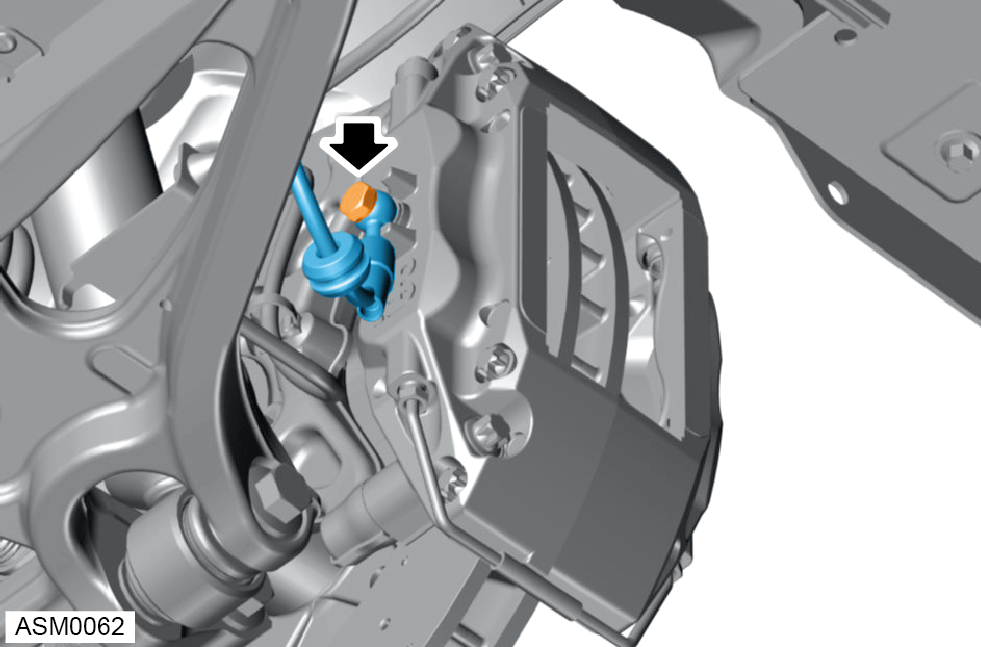
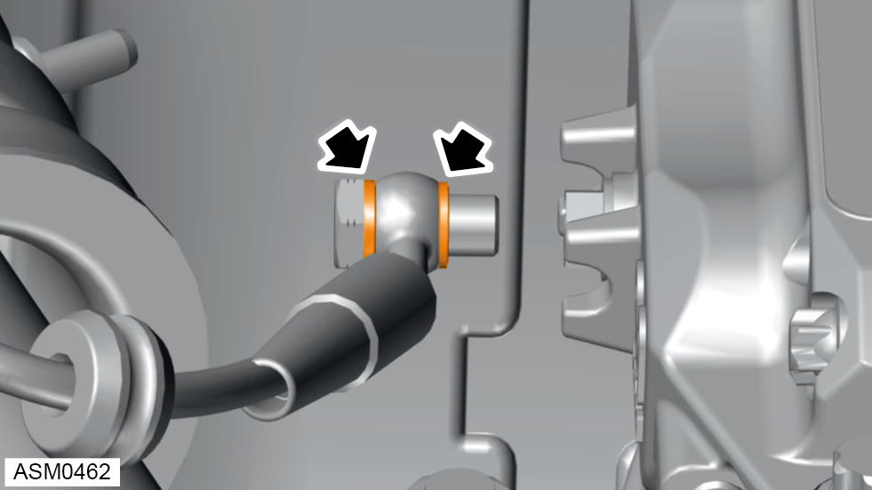
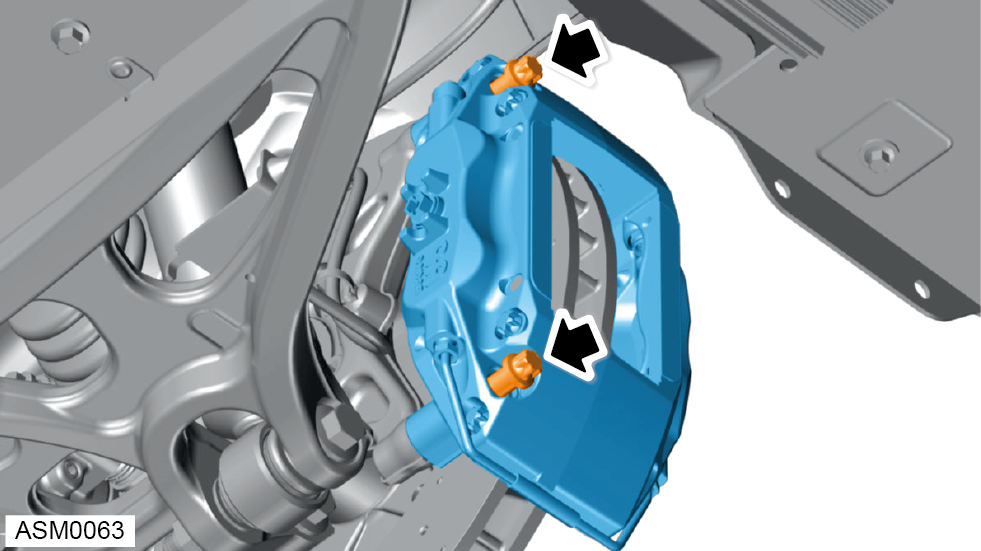

Brake Disc Caliper - Rear - Left Side
Print
Operation Code: 33.01.06-02
Removal
- Remove brake pads - rear - left side. Refer to procedure.

- Remove brake hose banjo bolt from brake caliper. Torque 30 Nm.

- Remove brake hose sealing washers (x2).
 CAUTION: Brake fluid will discharge from brake hose when removing banjo bolt. Use a container to collect brake fluid.
CAUTION: Brake fluid will discharge from brake hose when removing banjo bolt. Use a container to collect brake fluid.
CAUTION: Do not allow brake fluid to contact lower arm ball joint.
NOTE: Always record quantity and fitted position of washers.
- Plug brake hose connections.
CAUTION: Plug pipe connections to prevent fluid loss and ingress of moisture or dirt.
CAUTION: If brake fluid is spilt on the paintwork wash off immediately with clean water.

- Remove and discard M12x75 bolts (x2) securing brake caliper to hub carrier. Torque 86 Nm.
- Remove brake caliper from vehicle.
Installation
- Installation is the reverse of removal procedure except the following:
NOTE: Make sure the brake hose is free of kinks during installation.
- Renew brake caliper bolts.
- Renew banjo bolt sealing washers.
- Bleed brakes using Lotus Insight tool.
- Operate brake pedal at least 5 times to seat pads against brake disc.
 WARNING: Always check brake pads are seated correctly before driving the vehicle.
WARNING: Always check brake pads are seated correctly before driving the vehicle.